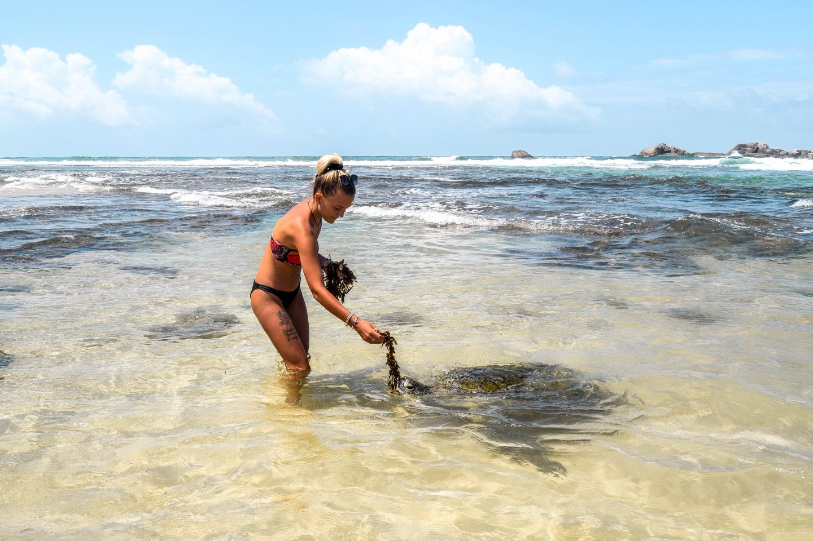

Best Escape Anyone Can Have
MIRISSA COAST


Mirissa, in the Matara district of the southern province, is one of the most well-known whale-watching destinations in Sri Lanka. Mirissa is more than simply a whale-watching destination. Swimming, for example, because Mirissa's beaches are among the most beautiful in the country and are ideal for swimming, surfing, bodysurfing in the best waves, snorkeling, and whale and dolphin watching. It is well worth a visit.
BENTHOTA BEACH
When it comes to water activities in Sri Lanka, Bentota, which is located in the Galle District in the Southern Province, is always top. This site, with one of the most beautiful vistas and beaches, offers a variety of water activities such as adrenaline-pumping speed boat and jet ski rides, wind surfing, boogie boarding, water skiing, kite surfing, and much more where a visit is worth the time.
HIKKADUWA BEACH

Hikkaduwa, known as one of the top surfing spots in the world, is an enticing location with a lovely beach and a variety of other water activities such as snorkeling and scuba diving. Off the shore, there are a number of tiny islands surrounded by beautiful coral formations, with a variety of fish and other aquatic critters to see. Glass-bottomed boats are available for you to use to make your trip even more enjoyable!
MIRISSA
CENTRAL BEACH MIRISSA
Ratings: 3 star hotel
Adress: Asian Highway 43, Udupila Road.
Contact: 071 239 2059
BENTOTA
HOTEL EKHO
Ratings: 4 star hotel
Adress: Beach Rd, Bentota 80500
Contact:0342 275 126
HIKKADUWA
CINNAMON HOTELS
Ratings: 4 star hotel
Adress: 360 Galle Rd, Hikkaduwa 80240
Contact:0912 278 000